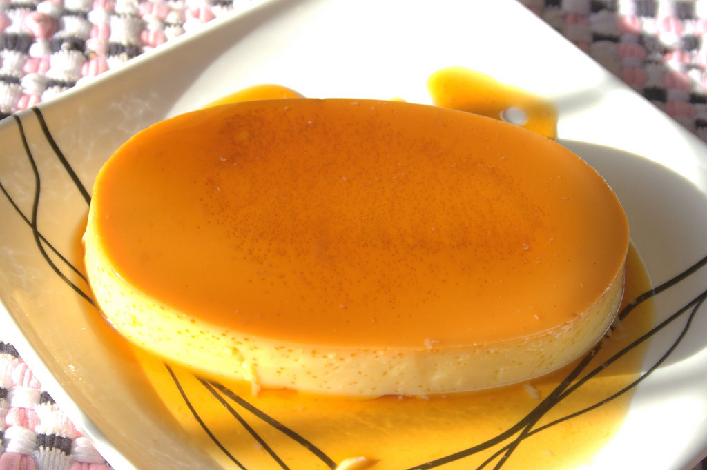

Leche Flan

Description
A Filipino dessert consisting of milk, eggs and caramel
Ingredients
- 10 pieces eggs
- 1 can condensed milk (14 oz)
- 1 cup evaporated milk
- 1 cup granulated sugar
- 1 teaspoon vanilla extract
Steps
- Using all the eggs, separate the yolk from the egg white (only egg yolks will be used)
- Place the egg yolks in a big bowl then beat them using a fork or an egg beater
- Add the condensed milk and mix thoroughly
- Pour-in the fresh milk and Vanilla. Mix well
- Put the mold (llanera) on top of the stove and heat using low fire
- Put-in the granulated sugar on the mold and mix thoroughly until the solid sugar turns into liquid (caramel) having a light brown color
- Spread the caramel (liquid sugar) evenly on the flat side of the mold
- Wait for 5 minutes then pour the egg yolk and milk mixture on the mold
- Cover the top of the mold using an Aluminum foil
- After steaming, let the temperature cool down then refrigerate